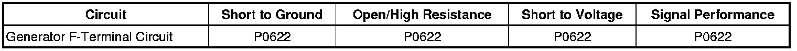

P0622
DTC P0622
Diagnostic Instructions
* Perform the Diagnostic System Check - Vehicle (Initial Inspection and Diagnostic Overview) prior to using this diagnostic procedure.
* Review Strategy Based Diagnosis (Initial Inspection and Diagnostic Overview) for an overview of the diagnostic approach.
* Diagnostic Procedure Instructions (Initial Inspection and Diagnostic Overview) provides an overview of each diagnostic category.
DTC Descriptor
DTC P0622
- Generator F-Terminal Circuit
Diagnostic Fault Information

Circuit/System Description
The engine control module (ECM) uses the generator field duty cycle signal circuit to monitor the duty cycle of the generator. The generator field duty cycle signal circuit connects to high side of the field windings in the generator. A pulse width modulated (PWM) high side driver in the voltage regulator turns the field windings ON and OFF. The ECM uses the PWM signal input to determine the generator load on the engine. This allows the ECM to adjust the idle speed to compensate for high electrical loads. The ECM monitors the status of the generator field duty cycle signal circuit. When the Ignition is in the RUN position and the engine is OFF, the ECM should detect a duty cycle near 0 percent. However, when the engine is running, the duty cycle should be between 5-95 percent.
Conditions for Running the DTC
* No generator, crankshaft position (CKP) sensor, or camshaft (CMP) sensor DTCs are set.
* Ignition ON engine OFF, for the Ignition ON test.
* Engine running, engine speed less than 3,000 RPM for the RUN test.
Conditions for Setting the DTC
* Ignition ON engine OFF, the ECM detects a PWM signal greater than 65 percent for at least 5 seconds.
* Engine running, the ECM detects a PWM signal less than 5 percent for at least 15 seconds.
Action Taken When the DTC Sets
DTC P0622 is a C type DTC.
Conditions for Clearing the DTC
DTC P0622 is a C type DTC.
Reference Information
Schematic Reference
Starting and Charging Schematics ([1][2]Electrical Diagrams)
Connector End View Reference
Component Connector End Views (Connector Views)
Description and Operation
Charging System Description and Operation (Description and Operation)
Electrical Information Reference
* Circuit Testing (Component Tests and General Diagnostics)
* Connector Repairs (Component Tests and General Diagnostics)
* Testing for Intermittent Conditions and Poor Connections (Component Tests and General Diagnostics)
* Wiring Repairs (Component Tests and General Diagnostics)
DTC Type Reference
Powertrain Diagnostic Trouble Code (DTC) Type Definitions (Diagnostic Trouble Code Descriptions)
Scan Tool Reference
Control Module References (Programming and Relearning) for scan tool information
Circuit/System Verification
With the scan tool installed, ignition ON and the Engine running, observe the scan tool ECM GEN-F Terminal Signal parameter. The parameter should read between 5 and 95 percent.
Circuit/System Testing
1. Ignition OFF, disconnect the generator harness connector.
2. Ignition ON and engine OFF, connect a test lamp to B+ and repeatedly probe the generator field duty cycle circuit terminal 2, harness side while monitoring the GEN-F Terminal Signal Parameter. It should change from 0 percent to above 95 percent.
• If the circuit tests normal, replace the generator.
• If the parameter was not affected by the test lamp, test the circuit for a short to voltage, short to ground, or an open/high resistance.
3. If the circuit tests, replace the ECM.
Repair Instructions
Perform the Diagnostic Repair Verification (Verification Tests) after completing the diagnostic procedure.
* Control Module References (Programming and Relearning) for ECM replacement, setup, and programming
* Generator Replacement (LY7 - Gas, 6 Cylinder, 3.6L, SFI, V6) (Generator Replacement)Generator Replacement (LH2 (AWD)) (Generator Replacement)Generator Replacement (LH2 (RWD)) (Generator Replacement)